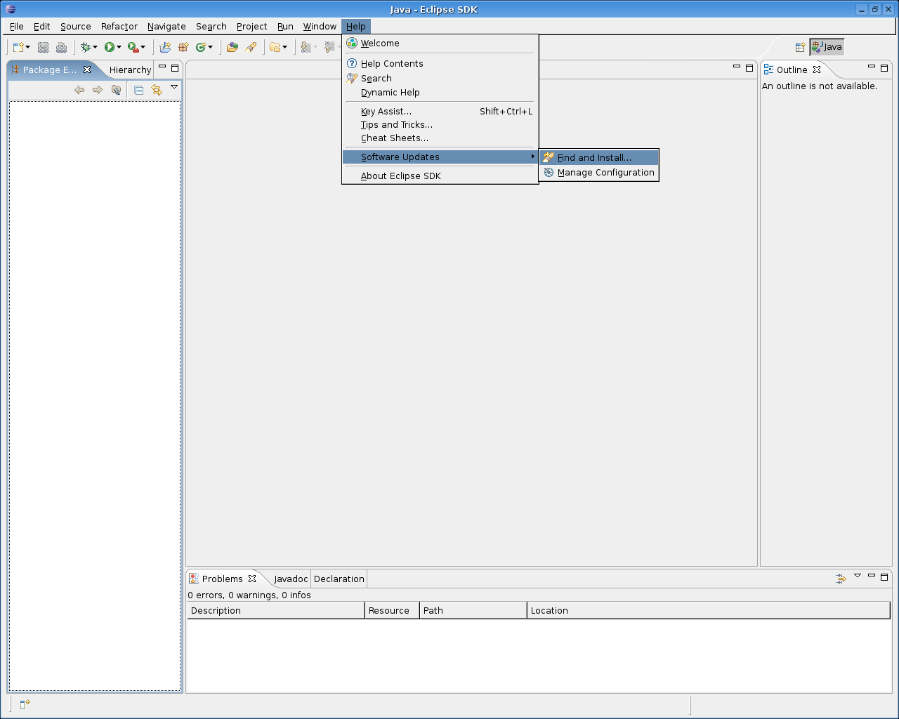
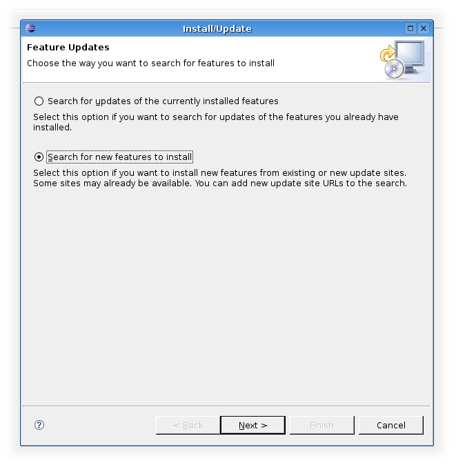
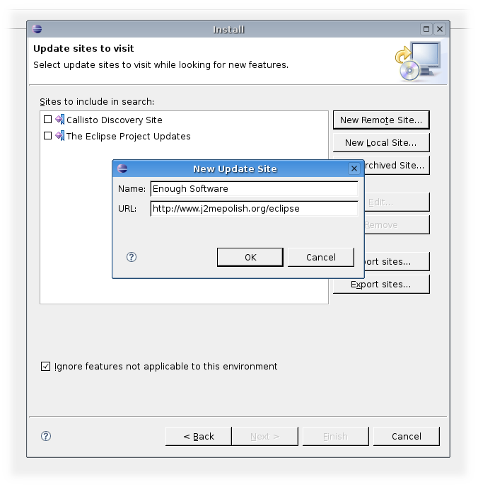
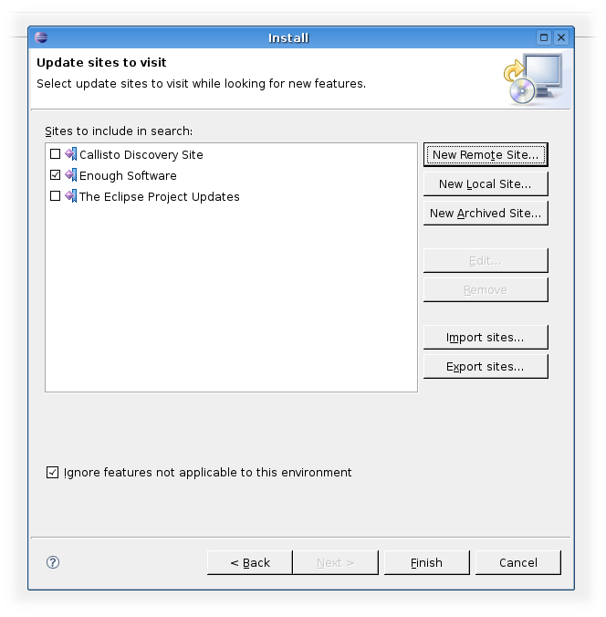
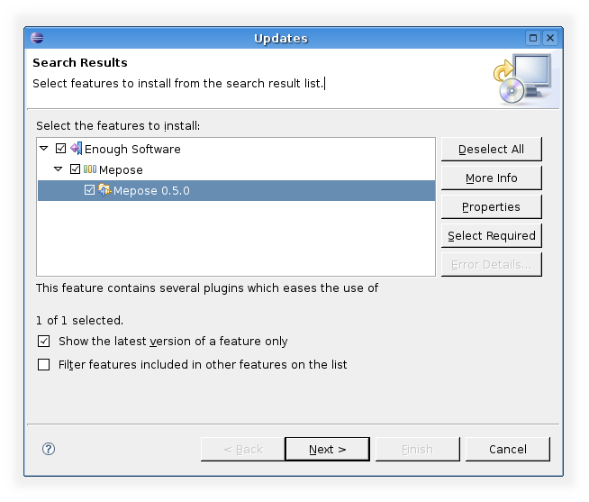
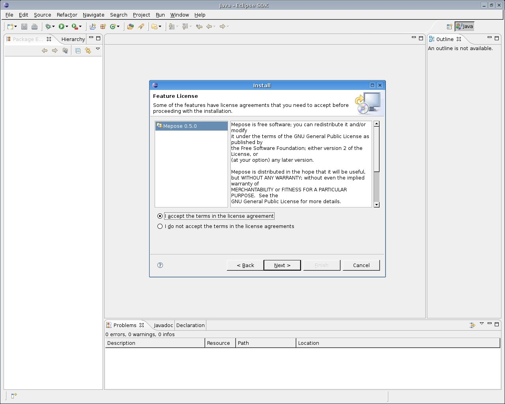
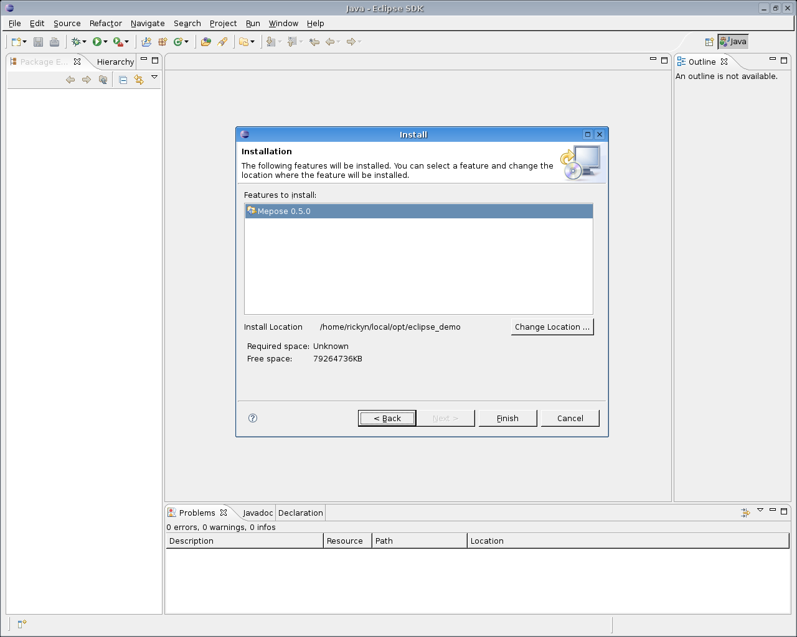
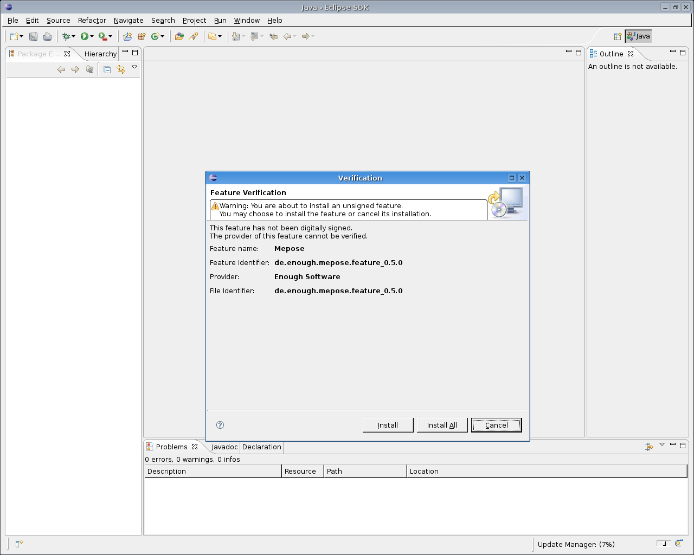
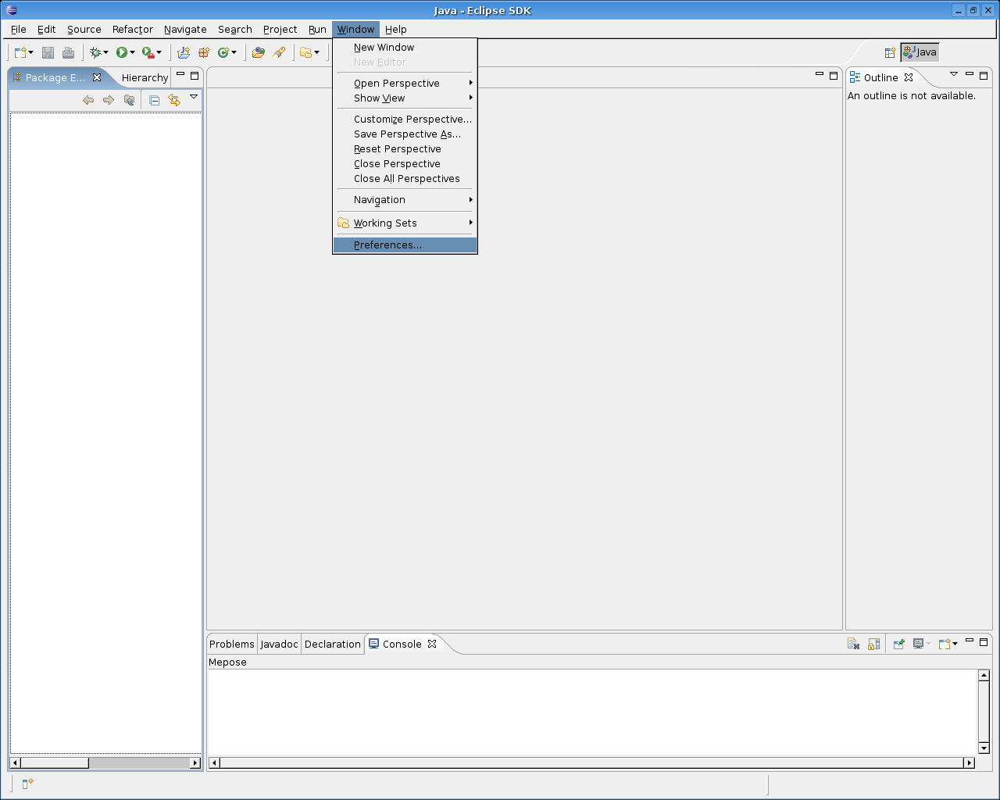
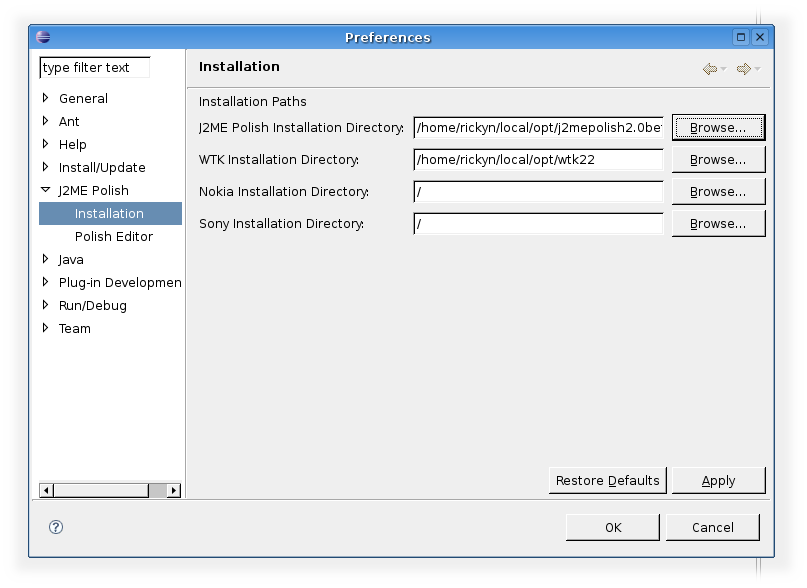

You need the following components on your system:
Installing Mepose, the J2ME Polish Eclipse integration, is pretty much straight forward:
Detailed information for these steps are given below.
You need Eclipse 3.2 to get this thing to work. Let's start.
Open the update manager from the menu with "Help/Software Updates/Find and Install...".
Choose "Search for new features to install" from the dialog.
Hit the button "New Remote Site..." and enter a name for the new update site (there are no restrictions on this name) and the URL http://www.j2mepolish.org/eclipse.
Than select the newly created update site and hit "Finish".
Choose the Mepose Feature and click "Next".
Make a mark that you accept the license agreement and click "Next".
If you want you can alter now the location the plugin will be installed into. Leave the page by clicking "Finish".
Click "Install All" to confirm that you want to install this unsigned feature.
The plugin itself is now installed. To set it up go to the preference page.
Now make two adjustments. Go to the "Debug" panel and uncheck the item "Suspend execution on uncaugt exceptions".

Locate the "Installation" panel within the J2ME Polish menu and enter at least the J2ME Polish installation directory and the WTK installation directory.
The installation is done!
<%include end.txt %>